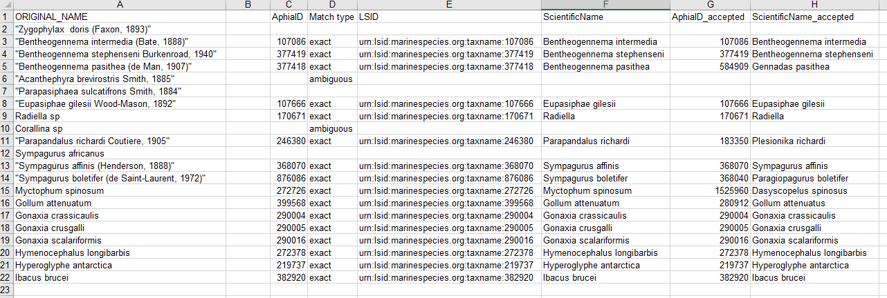

Data Cleaning
Last updated on 2025-11-02 | Edit this page
Overview
Questions
- How to convert dates to ISO?
- How to match scientific names to WoRMS?
- How to convert latitudes and longitudes to decimal degrees?
Objectives
- Aligning dates to the ISO 8601 standard.
- Matching scientific names to WoRMS.
- Converting latitude and longitude variations to decimal degrees North and East.
Now that you know what the mapping is between your raw data and the Darwin Core standard, it’s time to start cleaning up the data to align with the conventions described in the standard. The following activities are the three most common conversions a dataset will undergo to align to the Darwin Core standard:
- Ensuring dates follow the ISO 8601 standard
- Matching scientific names to an authoritative resource
- Ensuring latitude and longitude values are in decimal degrees
Below is a short summary of each of those conversions as well as some example conversion scripts. The exercises are intended to give you a sense of the variability we’ve seen in datasets and how we went about converting them. While the examples use the pandas package for Python and the tidyverse collection of packages for R (in particular the lubridate package), those are not the only options for dealing with these conversions but simply the ones we use more frequently in our experiences.
Getting your dates in order
Dates can be surprisingly tricky because people record them in many
different ways. For our purposes we must follow ISO 8601 which means
using a four digit year, two digit month, and two digit day with dashes
as separators (i.e. YYYY-MM-DD). You can also record time
in ISO 8601 but make sure to include the time zone which can also get
tricky if your data take place across time zones and throughout the year
where daylight savings time may or may not be in effect (and start and
end times of daylight savings vary across years). There are packages in
R and Python that can help you with these vagaries. Finally, it is
possible to record time intervals in ISO 8601 using a slash
(e.g. 2022-01-02/2022-01-12). Examine the dates in your
data to determine what amendments need to be made to ensure they are
following ISO 8601. Below are some examples and solutions in Python and
R for them.
ISO 8601 dates can represent moments in time at different resolutions, as well as time intervals, which use “/” as a separator. Date and time are separated by “T”. Timestamps can have a time zone indicator at the end. If not, then they are assumed to be local time. When a time is UTC, the letter “Z” is added at the end (e.g. 2009-02-20T08:40Z, which is the equivalent of 2009-02-20T08:40+00:00).
üìå Tip
Focus on getting your package of choice to read the dates appropriately. While you can use regular expressions to replace and substitute strings to align with the ISO convention, it will typically save you time if you work in your package of choice to translate the dates.
| Darwin Core Term | Description | Example |
|---|---|---|
| eventDate | The date-time or interval during which an Event occurred, or a taxa was recorded or observed. Not suitable for a time in a geological context. |
1963-03-08T14:07-0600 (8 Mar 1963 at 2:07pm in the time
zone six hours earlier than UTC).2009-02-20T08:40Z (20
February 2009 8:40am UTC).2018-08-29T15:19 (3:19pm
local time on 29 August 2018).1809-02-12 (some time
during 12 February
1809).2007-03-01T13:00:00Z/2008-05-11T15:30:00Z (some
time during the interval between 1 March 2007 1pm UTC and 11 May 2008
3:30pm UTC). |
Examples
Below are a few examples in R and Python for converting commonly represented dates to ISO 8601.
üìå Tip
When all else fails, treat the dates as strings and use substitutions/regular expressions to manipulate the strings into ISO 8601.
Matching your scientific names to WoRMS
OBIS uses the World Register
of Marine Species (WoRMS) as the taxonomic backbone for its system.
GBIF uses the Catalog of
Life. Since WoRMS contributes to the Catalog of Life and WoRMS is a
requirement for OBIS we will teach you how to do your taxonomic lookups
using WoRMS. The key Darwin Core terms that we need from WoRMS are
scientificNameID, also known as the WoRMS LSID, which looks
something like this
"urn:lsid:marinespecies.org:taxname:105838", and
kingdom. But you can grab the other parts of the taxonomic
hierarchy such as taxonRank.
There are two ways to grab the taxonomic information necessary. First, you can use the WoRMS Taxon Match Tool. The tool accepts lists of scientific names (each unique name as a separate row in a .txt, .csv, or .xlsx file) up to 1500 names and provides an interface for selecting the match you want for ambiguous matches. A brief walk-through using the service is included in the challenge box below. A more detailed step-by-step guide on using the WoRMS Taxon Match Tool for the MBON Pole to Pole can be found here. Additionally, OBIS has a three-part video series on YouTube about using the tool.
The other way to get the taxonomic information you need is to use worrms (yes there are two r’s in the package name) or pyworms.
| Darwin Core Term | Description | Example |
|---|---|---|
| scientificNameID | An identifier for the nomenclatural (not taxonomic) details of a scientific name. | urn:lsid:ipni.org:names:37829-1:1.3 |
| kingdom | The full scientific name of the kingdom in which the taxon is classified. |
Animalia, Archaea, Bacteria,
Chromista, Fungi, Plantae,
Protozoa, Viruses
|
| taxonRank | The taxonomic rank of the most specific name in the scientificName. |
subspecies, varietas, forma,
species, genus
|
Examples
Below are a few example tools that can be used to match scientific names to WoRMS.
Create a CSV (comma separated value) file with the scientific name of
the species of interest. Here we are showing some of the contents of the
file species.csv.

Upload that file to the WoRMS Taxon match service
- make sure the option LSID is checked
-
for the example file, make sure you select LineFeed as the
row delimiter and Tab as the column delimiter

Identify which columns to match to which WoRMS term. 
Click Match
Hopefully, a WoRMS exact match will return
- In some cases you will have ambiguous matches. Resolve these rows by using the pull down menu to select the appropriate match.
- Non-matched taxa will appear in red. You will have to go back to
your source file and determine what the appropriate text should
be.

Download the response as an XLS, XLSX, or text file and use the information when building the Darwin Core file(s). The response from the example linked above can be found here. A screenshot of the file can be seen below: 
-
Create a CSV (comma separated value) file with the scientific name of the species of interest. Here we are showing some of the contents of the file
species.csv.screenshot -
Upload that file to the WoRMS Taxon match service
- make sure the option LSID is checked
-
for the example file, make sure you select LineFeed as the
row delimiter and Tab as the column delimiter
Identify which columns to match to which WoRMS term.
Click
Match-
Hopefully, a WoRMS exact match will return
- In some cases you will have ambiguous matches. Resolve these rows by using the pull down menu to select the appropriate match.
- Non-matched taxa will appear in red. You will have to go back to
your source file and determine what the appropriate text should
be.
Download the response as an XLS, XLSX, or text file and use the information when building the Darwin Core file(s). The response from the example linked above can be found here. A screenshot of the file can be seen below:
Getting lat/lon to decimal degrees
Latitude (decimalLatitude) and longitude
(decimalLongitude) are the geographic coordinates (in
decimal degrees north and east, respectively), using the spatial
reference system given in geodeticDatum of the geographic
center of a location.
-
decimalLatitude, positive values are north of the Equator, negative values are south of it. All values lie between -90 and 90, inclusive. -
decimalLongitude, positive values are east of the Greenwich Meridian, negative values are west of it. All values lie between -180 and 180, inclusive.
Note, that the requirement for decimalLatitude and
decimallLongitude is they must be in decimal degrees in WGS84.
Since this is the requirement for Darwin Core, OBIS and GBIF
will assume data shared using those Darwin Core terms are in the
geodetic datum WGS84. We highly recommend checking
the coordinate reference system (CRS) of your observations to confirm
they are using the same datum and documenting it in the
geodeticDatum Darwin Core term. If your coordinates are not
using WGS84, they will need to be converted in order to
share the data to OBIS and GBIF since decimalLatitude and
decimalLongitude are required terms.
Helpful packages for managing CRS and geodetic datum: * python: GeoPandas has a utility. * R: terra and sf.
If at all possible, it’s best to extract out the components of the
information you have in order to compile the appropriate field. For
example, if you have the coordinates as one lone string
17° 51' 57.96" S 149° 39' 13.32" W, try to split it out
into its component pieces: 17, 51,
57.96, S, 149, 39,
13.32, and W just be sure to track which
values are latitude and which are longitude.
| Darwin Core Term | Description | Example |
|---|---|---|
| decimalLatitude | The geographic latitude (in decimal degrees, using the spatial reference system given in geodeticDatum) of the geographic center of a Location. | -41.0983423 |
| decimalLongitude | The geographic longitude (in decimal degrees, using the spatial reference system given in geodeticDatum) of the geographic center of a Location. | -121.1761111 |
| geodeticDatum | The ellipsoid, geodetic datum, or coordinate reference system (CRS) upon which the geographic coordinates given in decimalLatitude and decimalLongitude as based. | WGS84 |
 Image credit: xkcd
Image credit: xkcd
Examples
Below are a few examples in R and Python to convert some common coordinate pairs.
- When doing conversions it’s best to break out your data into it’s component pieces.
- Dates are messy to deal with. Some packages provide easy solutions, otherwise use regular expressions to align date strings to ISO 8601.
- WoRMS LSIDs are a requirement for OBIS.
- Latitude and longitudes are like dates, they can be messy to deal with, so take a similar approach. They have to be in decimal degrees.